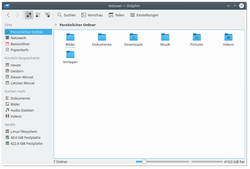
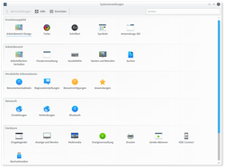

KDE Plasma Grundlagen
Der KDE Plasma Desktop wird von der KDE Community entwickelt und betreut, einem weltweiten Netzwerk von Programmierern, die sich freier Software verschrieben haben. Plasma ist der Standard-Desktop von Kubuntu, kann aber auch ohne weitere Probleme unter Ubuntu nachgerüstet werden. Außerdem glänzt Plasma mit vielfältigen Einstellungsmöglichkeiten für den Benutzer. Mit Plasma wurde eine benutzerfreundliche und mächtige Desktopumgebung geschaffen.
Programme starten¶
Über das K-Menü¶
 Der "K-Menü"-Knopf, ein Menü, mit dem sich installierte Programme starten lassen, befindet sich in der Regel ganz links in der Kontrollleiste. In aktuellen Versionen kann zum Start auch die Taste
Windows gedrückt werden, was besonders Umsteiger aus anderen Betriebsystemen sehr freuen wird. Ein ausführlicher Artikel zum K-Menü findet sich in Kickoff.
Der "K-Menü"-Knopf, ein Menü, mit dem sich installierte Programme starten lassen, befindet sich in der Regel ganz links in der Kontrollleiste. In aktuellen Versionen kann zum Start auch die Taste
Windows gedrückt werden, was besonders Umsteiger aus anderen Betriebsystemen sehr freuen wird. Ein ausführlicher Artikel zum K-Menü findet sich in Kickoff.
Mit Hilfe von Befehlen¶
Alternativ können Programme auch über die Tastenkombination Alt + F2 . In das erscheinende Eingabefeld muss der zugehörige Befehl für das Programm, meist der Programmname, eingegeben werden. Eine ausführliche Anleitung findet sich im Artikel KRunner. Nicht-grafische Anwendungen lassen sich in der Terminalanwendung Konsole ausführen. Diese startet man über "K-Menü -> System -> Terminal (Konsole)".
Arbeitsfläche und Kontrollleiste¶
Die KDE Arbeitsfläche und Kontrollleiste sind Bestandteile von Plasma. Das Besondere an dieser Arbeitsfläche ist, dass alle Komponenten sogenannte "Miniprogramme" (auch bekannt als "Widgets", "Gadgets" oder "Plasmoids") sind. Diese lassen sich frei bewegen und es können sehr leicht neue Miniprogramme zur Arbeitsfläche oder Kontrollleiste hinzugefügt werden.
Ausführliche Anleitungen findet man in den Artikeln zur Arbeitsfläche und zur Kontrollleiste.
Virtuelle Arbeitsflächen¶
In der Kontrollleiste sieht man eine Anzahl kleiner Kästchen. Das sind die virtuellen Arbeitsflächen. Um die Übersicht etwas zu erleichtern, kann man Programme auf zwei (oder je nach Einstellung auch mehr) verteilen. Zwischen den Arbeitsflächen schaltet man mit der Maus um, indem man auf eines der Kästchen klickt. Alternativ kann man auch mit dem Mausrad auf den Kästchen oder dem Arbeitsflächenhintergrund scrollen.
Wenn ein Programm geöffnet ist, erscheint ein Kästchen auf dem Minidesktop. Man kann die Fenster dort einfach mit der Maus hin- und herschieben. Fährt man mit der Maus über eines der Kästchen, wird ein Hinweisfenster mit einer Auflistung der Anwendungen auf der Arbeitsfläche angezeigt.
Aktivitäten¶
Eine wesentliche Eigenschaft der Plasma-Umgebung sind Aktivitäten. Diese ermöglichen es, die Einteilung in Aufgabenbereiche - fast wie separate KDE-Sitzungen - vorzunehmen. So lassen sich beispielsweise Aktivitäten für Surfen, Programmieren oder HomeOffice anlegen und so angepasste Arbeitsumgebungen mit den jeweils bevorzugten Plasmoiden, Hintergrundbildern und sogar eine eigene separate Energieverwaltung pro Aktivität einrichten.
Programme lassen sich festen oder mehreren Aktivitäten zuordnen. Diese Einstellung erfolgt entweder über "Systemeinstellungen -> Fensterverwaltung -> Fensterregeln" oder per " auf die Titelleiste des gestarteten Programmes -> Weitere Aktionen -> Spezielle Einstellungen für dieses Programm"
auf die Titelleiste des gestarteten Programmes -> Weitere Aktionen -> Spezielle Einstellungen für dieses Programm"
Ein Wechsel der Aktivitäten geschieht mit Windows + Tab ⇆ , die Aktivitäten-Übersicht ruft man mit Windows + Q auf.
Eine ausführliche Beschreibung findet sich unter Plasma/Aktivitäten.
Dateiarbeiten¶
|  |
| Dolphin |
Für Dateiarbeiten bietet KDE das Programm Dolphin. Mit diesem Spezialisten kann man Dateien komfortabel verwalten und sonst noch sehr viele Aufgaben bewältigen, z.B. sogar Dateien auf einen FTP-Server hochladen.
Mit Konqueror steht ein weiterer Dateimanager zur Auswahl. Dieser verhält sich genauso wie Dolphin, ist jedoch ein wahres Multitalent und wird oft als Schweizer Taschenmesser für KDE bezeichnet.
Für Bilder steht mit Gwenview ein spezialisiertes Programm zur Verfügung.
Kontrolle¶
|  |
| Systemeinstellungen |
Plasma ist bekannt für höchste Anpassbarkeit und strotzt nur so vor Funktionen. Damit diese auch alle gut im Auge behalten werden können, muss es dafür einen zentralen Verwaltungspunkt geben. Dieser ist unter Kubuntu als KDE Systemeinstellungen gekennzeichnet und wird über "K-Menü -> Systemeinstellungen" geöffnet.
Fenstermanagement¶
Wechseln zwischen Fenstern¶
Mit der Tastenkombination Alt + Tab ⇆ kann zwischen den geöffneten Fenstern gewechselt werden. Dabei werden immer sowohl das Programmsymbol als auch der Titel aller Fenster angezeigt. Wenn die Arbeitsflächeneffekte aktiviert sind, wird eine komplette Vorschau der Anwendung angezeigt.
Verschieben von Fenstern¶
Zusätzlich zum Standard, Fenster mit dem Ziehen der Titelleiste zu verschieben, kann man auch mit gedrücktem Alt das ganze Fenster als "Angriffsfläche" verwenden.
Fenstergröße ändern¶
Die Größe von Fenstern kann natürlich über die Fensterränder geändert werden. Man kann aber auch Alt halten und sich der rechten Maustaste bedienen, es hat den selben Effekt.
Schließen von Fenstern erzwingen¶
Es passiert nicht oft, aber es kann doch vorkommen, dass ein Programm sich "aufhängt", also nicht mehr bedient werden kann. Um dieses einfach und schnell zu beenden, bietet sich die Tastenkombination Strg + Alt + Esc an. Nachdem diese Tasten betätigt wurden, verwandelt sich der Cursor in einen Totenkopf. Klickt man nun auf ein Programmfenster, so wird dieses augenblicklich geschlossen. Sollte man sich doch entscheiden, kein Programm zu beenden, reicht das Betätigen der Taste Esc und der Totenkopf wird wieder zum normalen Cursor. Noch mehr Details dazu erfährt man im Artikel xkill.
Wo gehts weiter?¶
Auf alle Fälle sollte man sich die Übersicht der KDE-Artikel ansehen. Dort findet man sehr viele hilfreiche Informationen. Auf der Suche nach bestimmten Programmen? Einfach bei der Liste der KDE-Programme nachlesen und dann installieren.
- Erstellt mit Inyoka
-
 2004 – 2017 ubuntuusers.de • Einige Rechte vorbehalten
2004 – 2017 ubuntuusers.de • Einige Rechte vorbehalten
Lizenz • Kontakt • Datenschutz • Impressum • Serverstatus -
Serverhousing gespendet von